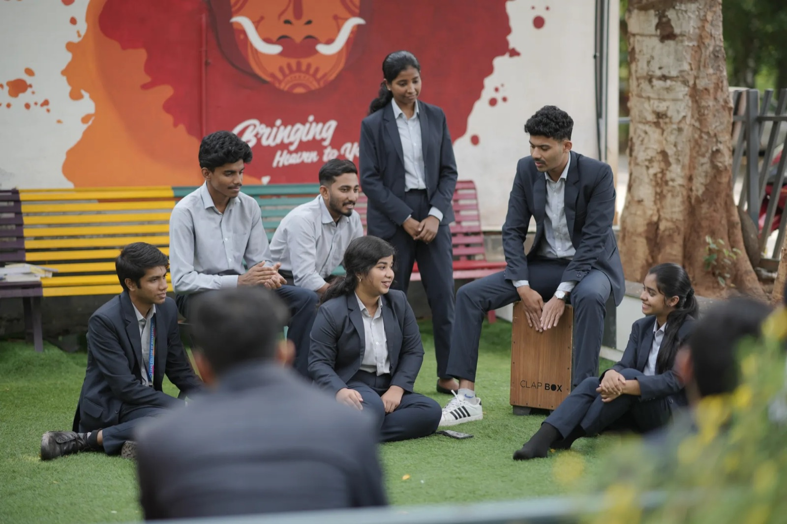
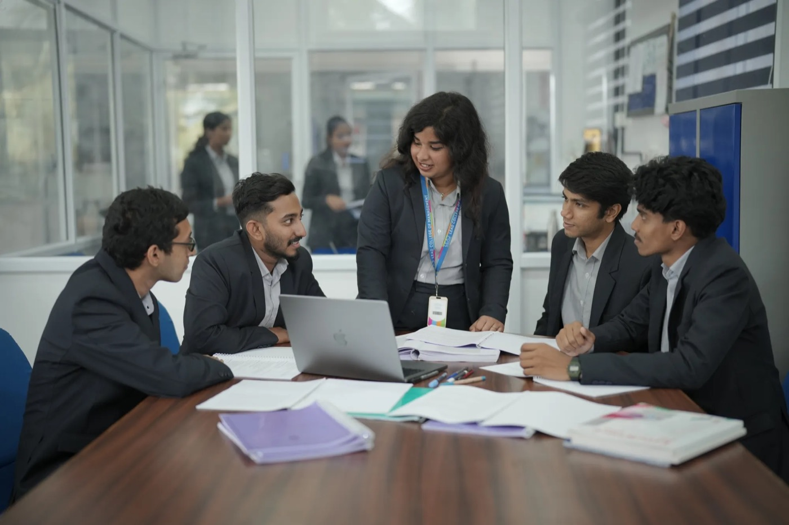

Management foundations
Build a strong base across core business functions and decision-making.
01 · Department of Management Studies
An MBA built around business practice, purposeful leadership and learning that travels beyond the classroom.

About the programme
Since 2010, LEAD’s Department of Management Studies has evolved its MBA around changing business needs. The programme brings management fundamentals together with digital capability, project work and leadership development.
Students learn in a fully residential setting in Dhoni, Palakkad, with opportunities to apply ideas through internships, live projects and social immersion.

Curriculum
LEAD reviews the curriculum for each incoming batch, drawing on autonomous status to keep learning connected to evolving markets and technology.
Build a strong base across core business functions and decision-making.
Use data, emerging technologies and new business models with confidence.
Work through cases, simulations and assignments grounded in current markets.
Strengthen collaboration, communication and accountability through practice.
Learning beyond class
Structured work experiences help students carry classroom learning into live business challenges.
Understand business functions and how teams work across an organisation.
Take on domain assignments and analytical work with industry partners.
Contribute to consulting, strategy or entrepreneurship projects.
Final project model
As a culminating project, students apply management thinking to an industry challenge, a research question or a venture idea.
Capstone 01
Work with organisations on current business questions and operating challenges.
Capstone 02
Investigate contemporary management issues through structured academic inquiry.
Capstone 03
Develop an entrepreneurial idea or move a venture concept toward validation.
Entrepreneurship pathway
Fully residential
At Dhoni, Palakkad, students share an immersive campus experience that makes room for focused study, collaboration and the everyday exchange of ideas.
Build perspective through close peer collaboration and shared experiences.
A residential setting supports a steady rhythm for classes, projects and independent work.
Carry learning into campus activities, conversations and student initiatives.
Career directions
The MBA supports students looking toward leadership roles across organisations, consulting and analytics, digital business or entrepreneurship.
Lead functions and teams across organisations.
Solve business problems with evidence and structure.
Work where business and technology meet.
Build ventures with support from LEAD-BI.
Your next step
Explore admissions information or start your MBA application through the official LEAD portal.
Social immersion
Business learning with a wider purpose.
Students engage with community and social enterprise contexts, listen to local perspectives and explore practical responses to real needs.
01 · Listen
Start with people
Understand a community’s priorities before proposing a solution.
02 · Explore
Study the challenge
Use observation, research and teamwork to see the issue clearly.
03 · Contribute
Put learning to work
Shape a thoughtful response and reflect on its possible impact.